CASE 000
ORIGIN
すべての始まり。なぜLAST GATEが必要になったのか。
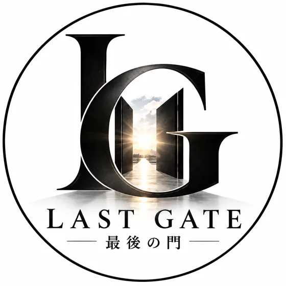
> establishing encrypted channel...
> identity requirement: NONE
> jurisdiction: GLOBAL
> mission: REBUILD
まだ終わっていない人を、終わらせない。
Your past does not define your future.
国籍、社会的地位、信用、過去。そのラベルだけで、あなたの未来を決めない。それでも、もう一度立ち上がることを諦めていない人のための、最後の門。
うまく説明できなくても構わない。今、何が起きているかだけを送ってください。
相談料、紹介料、成功報酬のいずれも取らない。受け取った連絡先を名簿として外部に渡すこともしない。
運営者自身が金融機関との交渉の最中にいる。先に名前を出せば、それ自体が交渉の材料になる。隠しているのではなく、順番の問題。氏名は相談の経過に応じて本人に直接伝える。
CASE FILESに並ぶのは運営者自身の記録。あなたの相談が記事や音声になることはない。
読むのは個人。定型の自動返信ではなく、内容に触れた返信を返す。数日かかる場合がある。急を要する場合はその旨を本文に。
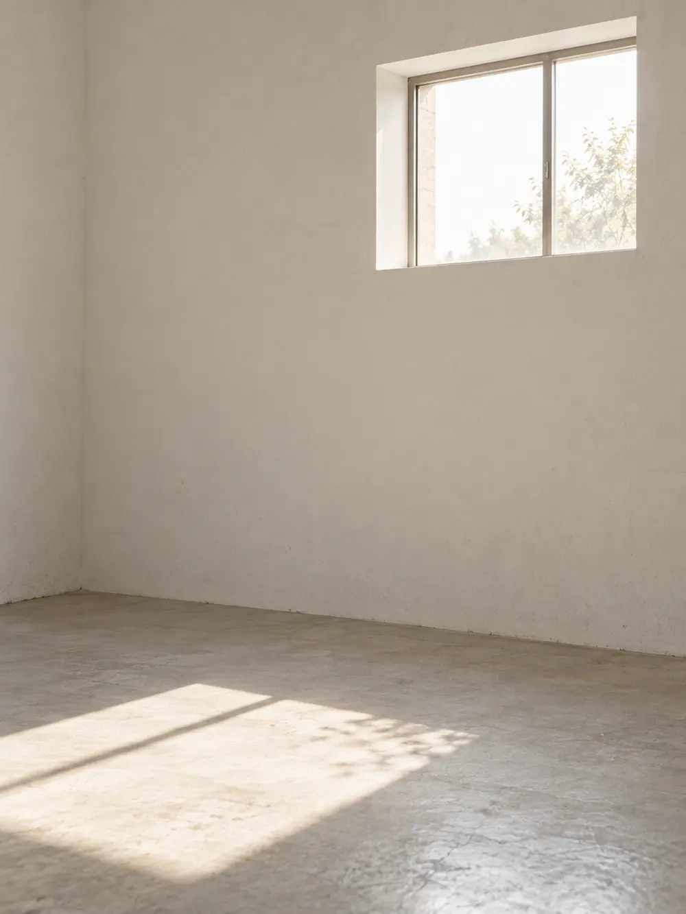
倒産、借金、失業、前科、依存、信用喪失、孤立。問題を一つずつ別の窓口へ送るのではなく、一人の人生として捉え、必要な専門家と出口を探す。
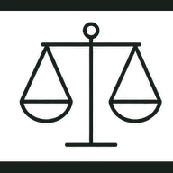
LEGAL債務・契約・紛争・社会復帰。資格を要する案件は専門家へ接続。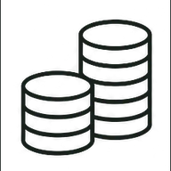
FINANCE返済・資金計画・金融問題から再起への選択肢を整理。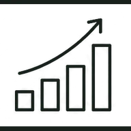
BUSINESS廃業だけではなく、事業再建・継続の可能性を探る。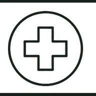
MEDICAL身体・精神面の危機を見逃さず、適切な医療へつなぐ。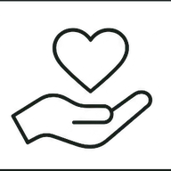
CARE本人・家族・生活背景まで含めた支援。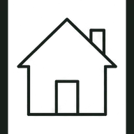
LIFE住居、生活、孤立など法律だけでは解けない問題。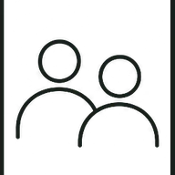
EMPLOYMENT再就職、仕事づくり、社会との接点を取り戻す。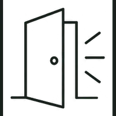
REBUILD相談で終わらせない。もう一度、自分で歩き始める。督促の電話、書面、期限の通知。追い込まれている最中は、それが「自分だけの異常な出来事」に見える。実際の記録を並べると、同じ形の出来事が別の場所で繰り返されていることがわかる。
音声記録の公開は、交渉中の案件への影響と特定可能性を確認したうえで、段階的に解除する。第一段階は日付・書面・請求内容・こちらの回答による時系列記録。
一人の当事者が経験した出来事を、確認できる記録とともに公開していく。
すべての始まり。なぜLAST GATEが必要になったのか。
支払い、信用、督促。その境界で起きたこと。
車両と信用をめぐる記録。
取引と企業対応の記録。
IDENTITY LOCKED. RELEASE PENDING.
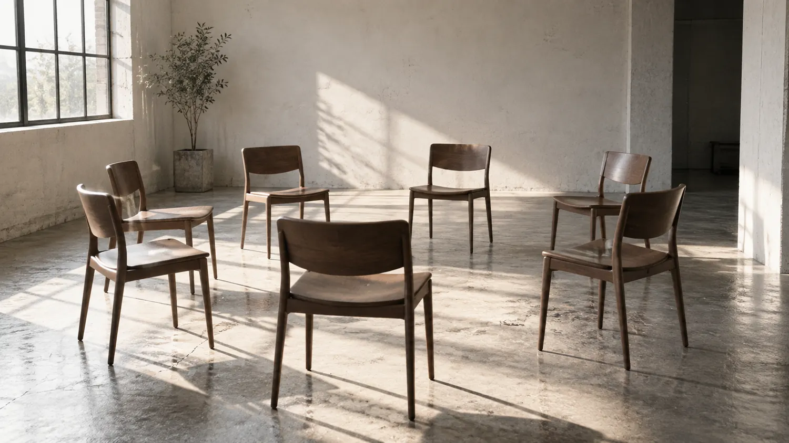
相談が集まっても、受け止める側がいなければ出口はつくれない。専門と実務を持つ人を募集する。
肩書きよりも、「まだ終わっていない人を、終わらせない」というCODEを共有できること。
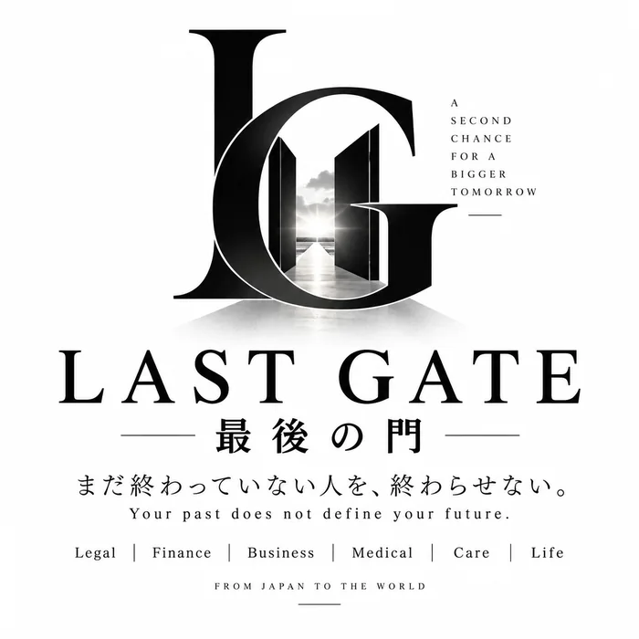
成功した後から再起を語るのではない。今まさに再建の途中にいる当事者からLAST GATEは始まる。
This is not a story of revenge.
This is a story of rebuilding.